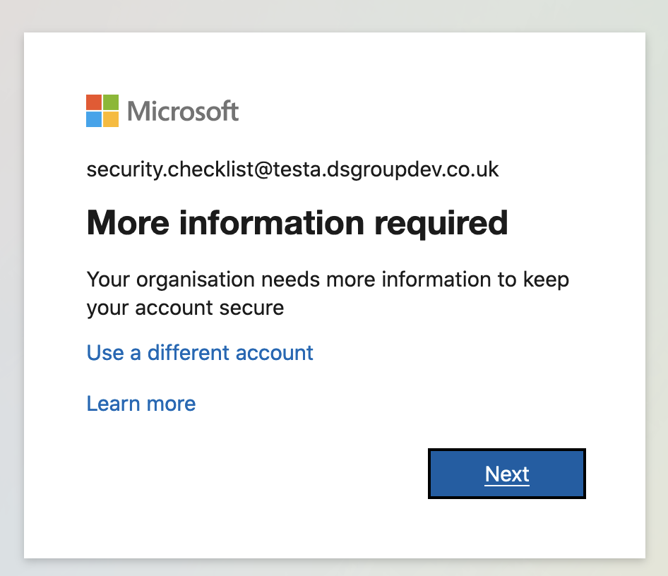
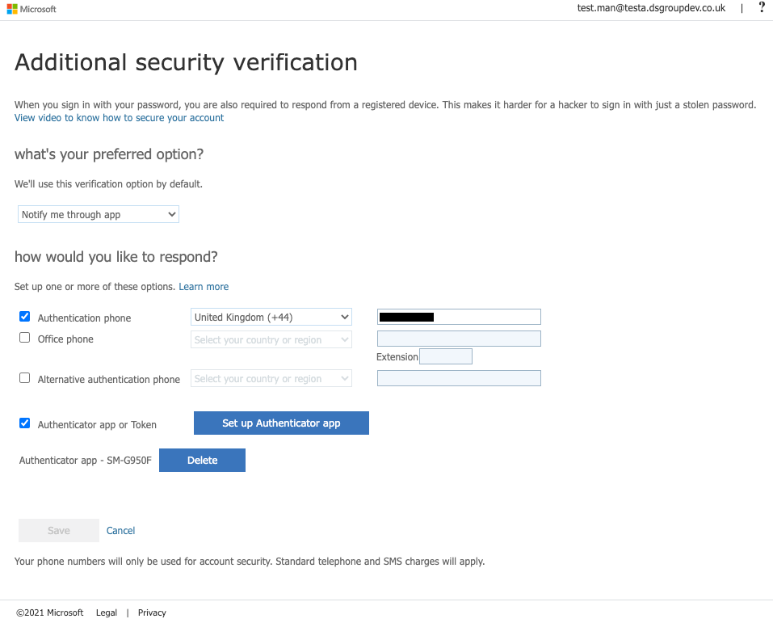
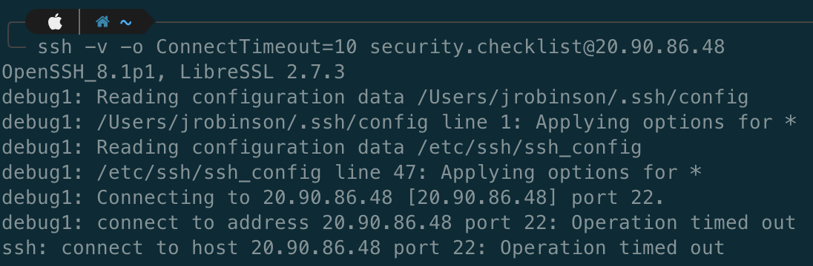
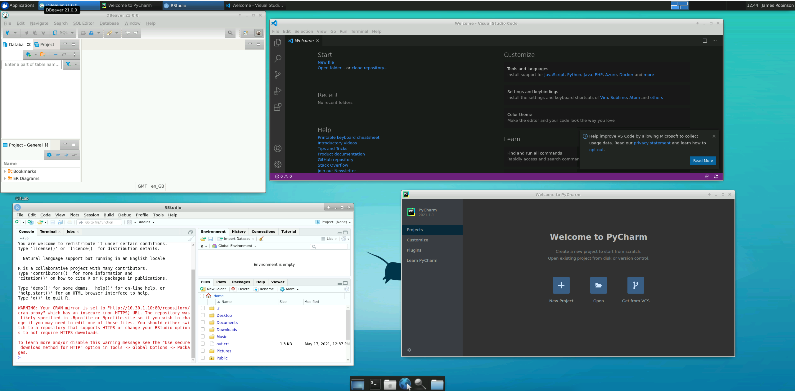

Security evaluation checklist¶
In this check list we aim to verify the security claims made here. The security checklist currently focuses on checks that can verify these security requirements for Tier 2 (or greater) SREs (with some steps noted as specific to a tier):
How to use this checklist¶
Ensure you have an SHM and attached SRE(s) that you wish to test.
Note
Some parts of the checklist are only relevant when there are multiple SREs attached to the same SHM.
Work your way through the actions described in each section, taking care to notice each time you see a üì∑ or a ✅ and the word Verify:
Note
üì∑ Where you see the camera icon, there should be accompanying screenshot(s) of evidence for this item in the checklist (you may wish to save your own equivalent screenshots as evidence)
✅ This indicates a checklist item for which a screenshot is either not appropriate or difficult
Prerequisites¶
Deployed SHM that you are testing
Deployed SRE A that is attached to the SHM
Deployed SRE B that is attached to the same SHM
VPN access to the SHM that you are testing
Important
If you haven’t already, you’ll need download a VPN certificate and configure VPN access for the SHM
Make sure you can use Remote Desktop to log in to the domain controller (DC1) and the network policy server (NPS).
The following users will be needed for this checklist
SRE standard user who is a member of the SRE A research users group
Create a new user without MFA
Following the SRE deployment instructions for setting up a non privileged user account, create an account but do not add them to any
SG <SRE ID> Research Usersgroup.Visit https://aka.ms/sspr in an incognito browser
Attempt to login and reset password, but do not complete MFA (see these steps)
System Manager who has
Contributorpermissions (or higher) on the underlying Azure subscriptionData provider who has no accounts on the Safe Haven system
1. Multifactor authentication and password strength¶
We claim:¶
Users are required to authenticate with Multi-factor Authentication (MFA) in order to access the secure analysis environment.
Passwords are strong
Which means:¶
Users must set up MFA before accessing the secure analysis environment.
Users cannot access the environment without MFA.
Users are required/advised to create passwords of a certain strength.
Verify by:¶
Check: Non-group user cannot access the apps¶
Attempt to login to the remote desktop web client as the SRE standard user
Attention
üì∑ Verify that:
üçê Guacamole:
user is prompted to setup MFA
üç± Microsoft Remote Desktop:
login works but apps cannot be viewed
Check: Membership of the correct group is insufficient to give access¶
Add the SRE standard user to the relevant Research Users group under Safe Haven Security Groups on the domain controller.
Attention
üì∑ Verify that:
üçê Guacamole:
user is prompted to setup MFA
üç± Microsoft Remote Desktop:
login works and apps can be viewed
attempting to login to SRD Main fails
User can self-register for MFA¶
Check that the SRE standard user is able to successfully set up MFA
Visit
https://aka.ms/mfasetupin an incognito browserLogin as the user you set up
Attention
✅ Verify that: user is guided to set up MFA
Set up MFA as per
{ref}the user guide instructions <roles_researcher_user_guide_setup_mfa>.
Attention
üì∑ Verify that:
MFA setup is successful
User can login after setting up MFA¶
Check that the SRE standard user can authenticate with MFA.
Login to the remote desktop web client as the SRE standard user.
Attention
üì∑ Verify that:
üçê Guacamole:
you are prompted for MFA and can respond

üç± Microsoft Remote Desktop:
you are prompted for MFA and can respond when attempting to log in to SRD Main (Desktop)
Authenticated user can access the Secure Research Desktop (SRD) desktop¶
Check that the SRE standard user can access the Secure Research Desktop (SRD) desktop.
Login to the remote desktop web client as the SRE standard user.
Attention
üì∑ Verify that:
üçê Guacamole:
you can connect to Desktop: Ubuntu0
üç± Microsoft Remote Desktop:
you can connect to SRD Main (Desktop)
2. Isolated Network¶
We claim:¶
Which means:¶
Researchers cannot access any part of the network from outside the network.
VMs in the SHM are only accessible by System Managers using the management VPN.
Whilst in the network, one cannot use the internet to connect outside the network.
SREs in the same SHM are isolated from one another.
Verify by:¶
Connect to SHM VMs if and only if connected to the SHM VPN:¶
Connect to the SHM VPN
Attempt to connect to the SHM DC and SHM NPS
Attention
✅ Verify that: connection works
Disconnect from the SHM VPN
Attempt to connect to the SHM DC and SHM NPS
Attention
✅ Verify that: connection fails
Fail to connect to the internet from within an SRD on the SRE network¶
Login as a user to an SRD from within the SRE by using the web client.
Choose your favourite three websites and attempt to access the internet using a browser
Attention
üì∑ Verify that:
browsing to the website fails

you cannot access the website using curl

you cannot look up the IP address for the website using nslookup

SREs are isolated from one another¶
Check that users cannot connect from one SRE to another one in the same SHM, even if they have access to both SREs
Ensure that the SRE standard user is a member of the research users group for both SRE A and SRE B
Log in to an SRD in SRE A as the SRE standard user using the web client.
Open the
Terminalapp from the dock at the bottom of the screen and enterssh -v -o ConnectTimeout=10 <IP address>where the IP address is one for an SRD in SRE B (you can find this in the Azure portal)
Attention
üì∑ Verify that:
SSH connection fails

Check that users cannot copy files from one SRE to another one in the same SHM
Log in to an SRD in SRE A as the SRE standard user using the web client.
In a separate browser window, do the same for SRE B.
Attempt to copy and paste a file from one SRE desktop to another
Attention
✅ Verify that: copy-and-paste is not possible
Check that the network rules are set appropriately to block outgoing traffic
Visit the portal and find
NSG_SHM_<SHM ID>_SRE_<SRE ID>_COMPUTE, then click onSettings > Outbound security rules
Attention
üì∑ Verify that:
there exists an NSG rule with Destination Internet and Action Deny and that no higher priority rule allows connection to the internet.
3. User devices¶
We claim:¶
Which means:¶
Managed devices must be provided by an approved organisation and the user must not have administrator access to them.
Network rules for higher tier environments permit access only from IP ranges corresponding to
Restrictednetworks that only permit managed devices to connect.
Verify by:¶
User devices (Tier 2)¶
One can connect regardless of device as long as one has an allow-listed IP address and credentials
Using a personal device, connect to the environment using an allow-listed IP address and credentials
Attention
✅ Verify that: connection succeeds
Using a managed device, connect to the environment using an allow-listed IP address and credentials.
Attention
✅ Verify that: connection succeeds
User devices (Tier 3)¶
All managed devices should be provided by a known IT team at an approved organisation.
Attention
✅ Verify that: the IT team of the approved organisation take responsibility for managing the device.
Attention
✅ Verify that: the user does not have administrator permissions on the device.
A device is able to connect to the environment if and only if it is managed (with correct VPN and credentials)
Using a personal device, attempt to connect to the environment using the correct VPN and credentials
Attention
✅ Verify that: connection fails
Using a managed device, attempt to connect to the environment using the correct VPN and credentials
Attention
✅ Verify that: connection succeeds
Network rules (Tier 2 and above):¶
There are are network rules permitting access to the remote desktop gateway from allow-listed IP addresses only
Navigate to the NSG for this SRE in the portal:
üç± Microsoft Remote Desktop:
NSG_SHM_<SHM ID>_SRE_<SRE ID>_RDS_SERVERüçê Guacamole:
NSG_SHM_<SHM ID>_SRE_<SRE ID>_GUACAMOLE
Attention
üì∑ Verify that:
the NSG has network rules allowing inbound access from allow-listed IP addresses only

Attention
✅ Verify that: all other NSGs (apart from NSG_SHM*<SHM ID>_SRE_<SRE ID>\_DEPLOYMENT) have an inbound Deny All rule and no higher priority rule allowing inbound connections from outside the Virtual Network (apart from the Admin VPN in some cases).
4. Physical security¶
We claim:¶
At Tier 3 access is limited to certain secure physical spaces
Which means:¶
Medium security research spaces control the possibility of unauthorised viewing.
Card access or other means of restricting entry to only known researchers (such as the signing in of guests on a known list) is required.
Screen adaptations or desk partitions can be adopted in open-plan spaces if there is a high risk of “visual eavesdropping”.
Firewall rules for the Environments can permit access only from Restricted network IP ranges corresponding to these research spaces.
Verify by:¶
Physical security (Tier 3)¶
Connection from outside the secure physical space is not possible.
Attempt to connect to the Tier 3 SRE web client from home using a managed device and the correct VPN connection and credentials
Attention
✅ Verify that: connection fails
Connection from within the secure physical space is possible.
Attempt to connect from research office using a managed device and the correct VPN connection and credentials
Attention
✅ Verify that: connection succeeds
Attention
✅ Verify that: check the network IP ranges corresponding to the research spaces and compare against the IPs accepted by the firewall.
Attention
✅ Verify that: confirm in person that physical measures such as screen adaptions or desk partitions are present if risk of visual eavesdropping is high.
5. Remote connections¶
We claim:¶
Connections can only be made via remote desktop (Tier 2 and above)
Which means:¶
User can connect via remote desktop but cannot connect through other means such as
SSH
Verify by:¶
SSH connection is not possible¶
Attempt to login as the SRE standard user via
SSHwithssh <user.name>@<SRE ID>.<safe haven domain>(e.g.ssh -v -o ConnectTimeout=10 ada.lovelace@sandbox.turingsafehaven.ac.uk)
Attention
üì∑ Verify that:
SSH login by fully-qualified domain name fails

Find the public IP address for the remote desktop server VM by searching for this VM in the portal, then looking at
ConnectunderSettings.üçê Guacamole: VM name will be
GUACAMOLE-SRE-<SRE ID>üç± Microsoft Remote Desktop: VM name will be
RDG-SRE-<SRE ID>
Attempt to login as the SRE standard user via
SSHwithssh <user.name>@<public IP>(e.g.ssh ada.lovelace@8.8.8.8)
Attention
üì∑ Verify that:
SSH login by public IP address fails
Attention
✅ Verify that: the remote desktop server (RDG-SRE-<SRE ID>) is the only SRE resource with a public IP address
6. Copy-and-paste¶
We claim:¶
Copy and paste is disabled on the remote desktop
Which means:¶
Users cannot copy something from outside the network and paste it into the network.
Users cannot copy something from within the network and paste it outside the network.
Verify by:¶
Users are unable to copy-and-paste between the SRD and their local device¶
Copy some text from your deployment device
Login to an SRD as the SRE standard user via the remote desktop web client
Open up a notepad or terminal on the SRD and attempt to paste the text to it.
Attention
✅ Verify that: paste fails
Write some next in the note pad or terminal of the SRD and copy it
Attempt to copy the text externally to deployment device (e.g. into URL of browser)
Attention
✅ Verify that: paste fails
Users can copy between VMs inside the network¶
Login to an SRD as the SRE standard user via the remote desktop web client
Open up a notepad or terminal on the SRD and attempt to paste the text to it.
In another tab or browser connect to a different SRD (or to the same VM via the SSH connection) using the remote desktop web client
Attempt to paste the text to it.
Attention
✅ Verify that: paste succeeds
7. Data ingress¶
We claim:¶
All data transfer to the Data Safe Haven should be via our secure data transfer process, which gives the Dataset Provider Representative time-limited, write-only access to a dedicated data ingress volume from a specific location.
Data is stored securely until approved for user access.
Which means:¶
Prior to access to the ingress volume being provided, the Dataset Provider Representative must provide the IP address(es) from which data will be uploaded and an email address to which a secure upload token can be sent.
Once these details have been received, the data ingress volume should be opened for data upload.
To minimise the risk of unauthorised access to the dataset while the ingress volume is open for uploads, the following security measures are in place:
Access to the ingress volume is restricted to a limited range of IP addresses associated with the Dataset Provider and the host organisation.
The Dataset Provider Representative receives a write-only upload token.
This allows them to upload, verify and modify the uploaded data, but does not viewing or download of the data.
This provides protection against an unauthorised party accessing the data, even they gain access to the upload token.
The upload token expires after a time-limited upload window.
The upload token is transferred to the Dataset Provider via a secure email system.
Verify by:¶
To test all the above, you will need to act both as the System Manager and Dataset Provider Representative:
Check that the System Manager can send a secure upload token to the Dataset Provider Representative over secure email¶
Use the IP address of your own device in place of that of the data provider
Generate a secure upload token with write-only permissions following the instructions in the administrator document.
Attention
✅ Verify that: the secure upload token is successfully created.
Attention
✅ Verify that: you are able to send a secure email containing this token (e.g. send it to your own email for testing purposes).
Ensure that data ingress works only for connections from the accepted IP address range¶
As the Dataset Provider Representative, ensure you’re working from a device that has an allow-listed IP address
Using the secure upload token with write-only permissions and limited time period that you set up in the previous step, follow the ingress instructions for the data provider
Attention
✅ Verify that: writing succeeds by uploading a file
Attention
✅ Verify that: attempting to open or download any of the files results in the following error: Failed to start transfer: Insufficient credentials. under the Activities pane at the bottom of the MS Azure Storage Explorer window.
Switch to a device that lacks an allow-listed IP address (or change your IP with a VPN)
Attempt to write to the ingress volume via the test device
Attention
✅ Verify that: the access token fails.
Check that the upload fails if the token has expired¶
Create a write-only token with short duration
Attention
✅ Verify that: you can connect and write with the token during the duration
Attention
✅ Verify that: you cannot connect and write with the token after the duration has expired
Attention
✅ Verify that: the overall ingress works by uploading different kinds of files, e.g. data, images, scripts (if appropriate).
8. Data egress¶
We claim:¶
SREs contain an
/outputvolume, in which SRE users can store data designated for egress.
Which means::¶
Users can write to the
/outputvolumeA System Manager can view and download data in the
/outputvolume viaAzure Storage Explorer.
Verify by:¶
Confirm that a non-privileged user is able to read the different storage volumes and write to output¶
Login to an SRD as the SRE standard user via the remote desktop web client
Open up a file explorer and search for the various storage volumes
Attention
✅ Verify that: the /output volume exists and can be read and written to
Attention
✅ Verify that: the permissions of other storage volumes match that described in the user guide.
Confirm that the different volumes exist in blob storage and that logging on requires domain admin permissions¶
As the System Manager, follow the instructions in the administrator document on how to access files set for egress with
Azure Storage Explorer.
Attention
✅ Verify that: you can see the files written to the /output storage volume (including any you created as a non-privileged user in step 1)
Attention
✅ Verify that: a written file can be taken out of the environment via download
9. Software ingress¶
We claim:¶
The base SRD provided in the SREs comes with a wide range of common data science software pre-installed, as well as package mirrors.
Additional software must be added separately via ingress.
Which means:¶
For Tier 0 and Tier 1 environments, outbound internet access means users can directly download their software from the internet.
For Tier 2 or higher environments we use the secure data transfer process.
Installation during deployment
If known in advance, software can be installed during SRD deployment whilst there is still internet access, but before project data is added. Once the software is installed, the SRD undergoes ingress into the environment with a one way lock.
Installation after deployment
Once an SRD has been deployed into the analysis environment it cannot be moved out. There is no outbound internet access.
Software is added via ingress in a similar manner to data:
Researchers are provided temporary write-only access to the software ingress volume.
The access is then revoked and the software is then reviewed.
If it passes review, the software is moved into the environment.
If the software requires administrator rights to install, a System Manager must do this. Otherwise, the researcher can do this themselves.
Verify by:¶
Check that some software tools were installed as expected during deployment¶
Login to an SRD as the SRE standard user via the remote desktop web client
Attention
üì∑ Verify that:
the following programmes can be opened without issue: DBeaver, RStudio, PyCharm and Visual Studio Code
Check that it’s possible to grant and revoke software ingress capability¶
Follow the instructions in the Safe Haven Administrator Documentation:
Attention
✅ Verify that: you can generate a temporary write-only upload token
Attention
✅ Verify that: you can upload software as a non-admin with this token, but write access is revoked after the temporary token has expired
Attention
✅ Verify that: software uploaded to the by a non-admin can be read by administrators
Attention
✅ Verify that: the SRE standard user cannot install software that requires administrator rights (e.g. anything that is installed with apt)
10. Software package repositories¶
We claim:¶
Which means::¶
Verify by:¶
Tier 2: Download a package that is not on the allow list¶
Login as the SRE standard user into an SRD via remote desktop web client
Open up a terminal
Attempt to install a package on the allowed list that is not included out-of-the-box (for example, try
pip install aero-calc)
Attention
üì∑ Verify that:
you can install the package
Attempt to install any package that is not on the allowed list (for example, try
pip install awscli)
Attention
üì∑ Verify that:
you can install the package

Tier 3: Download a package on the allow list and one not on the allow list¶
Login as the SRE standard user into an SRD via remote desktop web client
Attempt to install a package on the allowed list that is not included out-of-the-box (for example, try
pip install aero-calc)
Attention
üì∑ Verify that:
you can install the package

Then attempt to download a package that is not included in the allowed list (for example, try
pip install awscli)
Attention
üì∑ Verify that:
you cannot install the package
11. Firewall controls¶
We claim:¶
An
Azure Firewallensures that the administrator VMs have the minimal level of internet access required to function.
Which means:¶
Whilst all user access VMs are entirely blocked off from the internet, this is not the case for administrator access VMs such as the SHM-DC, SRE DATA server.
An Azure Firewall governs the internet access provided to these VMs, limiting them mostly to downloading Windows updates.
Verify by:¶
Admin has limited access to the internet¶
As the System Manager use Remote Desktop to connect to the SHM domain controller VM
Attempt to connect to a non-approved site, such as
www.google.com
Attention
üì∑ Verify that:
connection fails
Admin can download Windows updates¶
As the System Manager use Remote Desktop to connect to the SHM domain controller VM
Click on
Start -> Settings-> Update & SecurityClick the
Downloadbutton
Attention
üì∑ Verify that:
updates download and install successfully